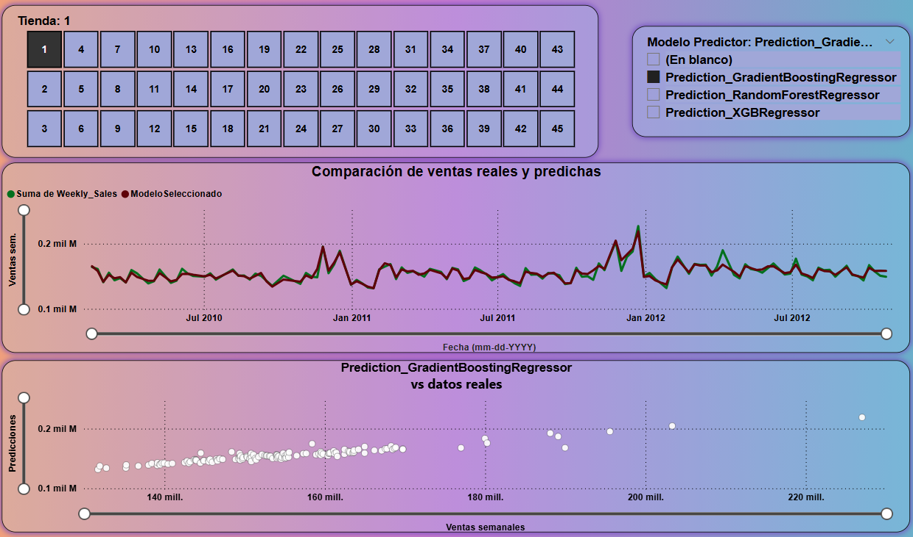

PORTFOLIO



Hola, soy Luis García. Máster en Ciencia de Datos y Big Data. Me apasiona aplicar técnicas estadísticas y avanzadas como Machine Learning y Deep Learning para resolver problemas complejos de la vida real. Mi enfoque se centra en comprender las necesidades de los clientes y empresas, identificar oportunidades para solucionar problemas mediante el análisis de datos, y desarrollar soluciones innovadoras que agreguen valor e impulsen la toma de decisiones informadas.
Máster Big Data, Data Science y analítica avanzada
Durante esta maestría, he adquirido un profundo conocimiento en el uso de herramientas y tecnologías clave en Big Data. He adquirido conocimiento practico en procesamiento batch y streaming, almacenamiento y gestión de la información, y procesamiento escalable utilizando Hadoop, Hive, Spark, MapReduce, entre otros.
Además, he profundizado en algoritmos de Machine Learning para tareas como clasificación, clusterización, regresión lineal, y métodos ensamblados. En el ámbito del Deep Learning, he desarrollado competencias para entrenar redes neuronales aplicadas a visión computacional, análisis de series de tiempo, análisis de sentimientos y modelos generativos.
Formación en ingeniería oceanográfica
Como ingeniero oceanográfico, combino física, matemáticas y programación para comprender los océanos y la atmósfera.
Mi trabajo incluye:
Todos estos conocimientos me permiten hacer ciencia de datos en áreas como salud, seguridad, oceanografía y negocios. Así mismo me emociona saber que este conocimiento es más arte que ciencia.
Máster con enfoque práctico, donde aprendí ha aplicar herramientas del Big Data (Hadoop, Hive, Spark, Apache Kafka, Nifi, entre otras) y entrenar modelos de machine y deep learning para entrenar redes neuronales aplicadas a visión computacional, análisis de series de tiempo, análisis de sentimientos y modelos generativos.
Como ingeniero oceanográfico tengo formación en física, matemáticas, programación y procesamiento de datos. Mi formación académica me permite analizar grandes volúmenes de datos, como son series de tiempo, datos topográficos, batimétricos, ortofotos, imágenes satelitales y masas de agua. Así mismo, tengo experiencia planificando salidas de campo, configurando sensores para la adquisición de datos en tiempo real y el procesamiento de los mismo.
Desarrollé una solución integral para el análisis de datos de ventas históricas de una cadena de tiendas minoristas, la cual incluyó la creación de un modelo de Machine Learning (ML) para predecir ingresos futuros y el diseño de un panel interactivo en Power BI que permite visualizar los resultados de manera clara y efectiva. Esta solución brinda a los usuarios la capacidad de analizar patrones de ventas pasadas, realizar proyecciones de ingresos futuros y explorar los datos de forma dinámica a través de informes interactivos en Power BI, optimizando así la toma de decisiones estratégicas
Lideré la ejecución de procesos de extracción, transformación y carga (ETL) para la gestión de datos oceanográficos. Además, implementé y configuré sensores oceanográficos para el monitoreo del fenómeno de El Niño 2023, logrando optimizar la recolección de datos en un 50%. Utilicé Python para entrenar y validar modelos de machine learning, aplicados al análisis de patrones climáticos y oceanográficos. Asimismo, generé informes y reportes detallados basados en el análisis de datos recopilados durante los cruceros internacionales que estudiaron el fenómeno de El Niño en la cuenca del Pacífico suramericano, contribuyendo con el desarrolo de algoritmo que automatizarón el la extracción, tranformación, y carga de las variables estudiadas en este fenómeno.